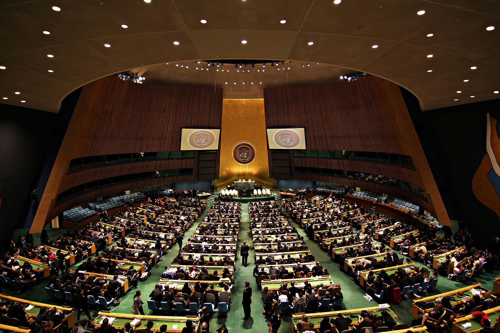

Blindtext
Dan Gillerman: still an envoy, this time for business
The former Israeli ambassador to the UN says "personal diplomacy" with Arab leaders is key. (SEE ORIGINAL)

“There is no political risk at all when investing in Israel,” says a confident Dan Gillerman, the former Israeli ambassador to the United Nations.
“Israel has survived so many crises, so many wars and so many challenges that it has proved without any doubt how resilient it is.
“We have prevailed and our industry and economy has excelled in times of challenges.”
The former diplomat, 70, is well versed in the art of selling and defending the Jewish state, having done so through the Second Intifada and Lebanon war during his diplomatic career.
Last week, he addressed a 125-strong audience of British and international investors at the Israel Private Equity Opportunity Summit, a City event organised by UK Israel Business.
As keynote speaker, Gillerman, a senior advisor to private equity firm Blackstone, was tasked with selling the technology-fuelled start-up nation as the best place in which to invest.
“An event like this is very important in awakening the senses and making the British private equity scene aware of the possibilities and opportunities in Israel,” he says.
“London is the world’s major financial centre. British funds will look at Europe and Israel might not be in their sights. But when they see peers like Blackstone and Apollo fighting for deals in Israel, they probably say to themselves, ‘we want to be there too’.”
He believes that Israel’s “classic industries” — from textiles to agriculture — would reap financial rewards for fund managers.
“An advantage of these industries is that they are international,” he says, pointing to Israel’s reliance on exporting its goods.
“Israel is a small market, so it has to depend on exports and many firms have overseas operations. There is a roll-over effect. When you invest in an Israeli company you could find yourself in India, China, eastern Europe or Latin America. It goes far beyond the size of Israel. It really opens up the world in many cases. Foreign funds are very interested in Israel. They all see a very exciting business opportunity in Israel.”
His passion for British investment in Israel could stem from his formative years in the UK.
The Israeli-born businessman-turned-diplomat, who chairs Gillerman Global, a consultancy firm specialising in forming strategic links between Israel and multinational companies, was educated at Whittingham College, a Jewish boarding school in Brighton.
It was there, 52 years ago, that met his British wife Janice, with whom he has two children and six grandchildren.
He went on to study politics, economics and law at Tel Aviv University and Hebrew University before becoming chairman of the Federation of Israeli Chambers of Commerce.
The role led to his position at the UN, one he held from 2003 to 2008, and which gave him plenty of opportunities to apply “personal diplomacy” skills and back Israeli businesses.
“Nothing can really prepare you for the reality of the UN,” he says. “Most countries send their most senior people to the UN. You meet people who are very close to the ruler, or in the case of many Arab countries it’s usually a cousin or a nephew, or a brother of the Sultan or Emir.
“By developing close relations and a dialogue with them based on trust you can actually bring dividends to your country which far outweighs the importance of the number of hands at any UN vote.
“I did that with Pakistan and also some of the Gulf Arab states. I even interacted with Iran’s Mohammad Javad Zarif, who was then the Iranian ambassador to the UN and is now Iran’s foreign minister,” he adds.
“Fourteen of my colleagues at the UN became foreign ministers, including Sergei Lavrov of Russia. These are connections and friendships which last and are still there.”